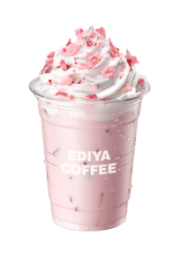
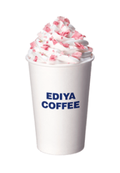
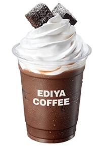
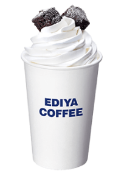
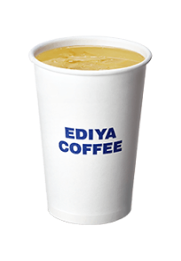
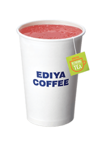
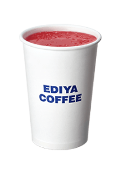
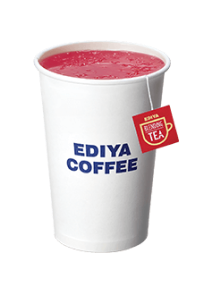

이디야 메뉴 목록
-
 ICED 벚꽃라떼 ICED 벚꽃라떼 Cherry Blossom Latte
은은한 벚꽃향과 라즈베리 화이트 초콜릿 토핑이 올라간 핑크빛 라떼
영양성분표 칼로리 (393kcal) 포화지방 (18.6g) 당류 (35g) 나트륨 (149mg) 단백질 (7g) 카페인 (0mg) -
 HOT 벚꽃라떼 HOT 벚꽃라떼 Cherry Blossom Latte
은은한 벚꽃향과 라즈베리 화이트 초콜릿 토핑이 올라간 핑크빛 라떼
영양성분표 칼로리 (430kcal) 포화지방 (19.0g) 당류 (38g) 나트륨 (190mg) 단백질 (10g) 카페인 (0mg) -
 ICED 브라우니 쇼콜라 ICED 브라우니 쇼콜라 Brownie Chocolate
깊고 진한 초콜릿의 맛에 부드러운 휘핑크림과 브라우니를 함께 어울러져 고급스러운 디저트 같은 초콜릿 음료
영양성분표 칼로리 (503kcal) 포화지방 (20.8g) 당류 (42g) 나트륨 (262mg) 단백질 (9g) 카페인 (12mg) -
 HOT 브라우니 쇼콜라 HOT 브라우니 쇼콜라 Brownie Chocolate
깊고 진한 초콜릿의 맛에 부드러운 휘핑크림과 브라우니를 함께 어울러져 고급스러운 디저트 같은 초콜릿 음료
영양성분표 칼로리 (503kcal) 포화지방 (20.9g) 당류 (42g) 나트륨 (299mg) 단백질 (9g) 카페인 (12mg) -
 제주청귤 오리지널 제주청귤 오리지널 Jeju Green Tangerine Tea
청정 제주지역에서 자라난 귀한 청귤의 풍부한 과육을 맛볼 수 있는 새콤달콤한 홈메이드 스타일 과일차
영양성분표 칼로리 (218kcal) 포화지방 (0.1g) 당류 (51g) 나트륨 (4mg) 단백질 (0g)) 카페인 (0mg) -
 제주청귤 블라썸 제주청귤 블라썸 Jeju Green Tangerine Blossom
청귤의 새콤함이 복숭아, 포도 등의 다양한 과일향과 함께 어우러져 밸런스가 훌륭한 블렌딩티
영양성분표 칼로리 (202kcal) 포화지방 (0.1g) 당류 (46g) 나트륨 (5mg) 단백질 (1g) 카페인 (0mg) -
 석류 오리지널 석류 오리지널 Pomegranate Tea
석류 특유의 산뜻한 향과 깔끔한 뒷맛이 느껴지며, 과육이 한알 한알 살아있는 붉은 빛의 매력적인 과일차
영양성분표 칼로리 (210kcal) 포화지방 (0.1g) 당류 (42g) 나트륨 (5mg) 단백질 (0g) 카페인 (0mg) -
 석류 애플라임 석류 애플라임 Pomegranate Apple Lime
산뜻한 석류에 다양한 과일과 꽃, 그리고 샴페인의 향이 더해져 보다 깊고 중후한 맛이 느껴지는 블렌딩티
영양성분표 칼로리 (220kcal) 포화지방 (0.1g) 당류 (42g) 나트륨 (7mg) 단백질 (1g) 카페인 (0mg)